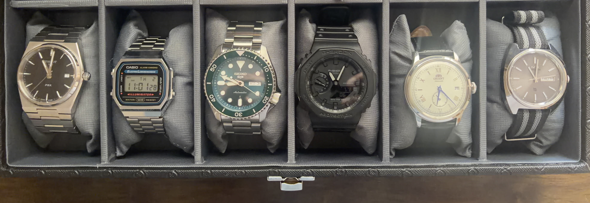

Barathwaj Maadhavan
AI Engineer · GenAI · Forward Deployed Engineer

My Collection
A small but growing collection — each one with a story. Let's start from the left side.
- Tissot PRX (Quartz) My first luxury watch — understated, integrated bracelet, and punches way above its weight. A gift from my father.
- Casio A168 (Quartz) First watch I bought with my own money. Lightweight and reliable — though arm hair gets in the way sometimes.
- Seiko SRPD61K1 Desk Diver (Automatic) First automatic I purchased. One of my most complimented watches.
- G-Shock GA2100 Casioak (Quartz) Rugged and reliable — follows the shape of the legendary Audemars Piguet Royal Oak.
- Orient Bambino Small Seconds (Automatic) The finest dress watch I own. Looks way more expensive than it actually is. Acquired when I hit a financial milestone.
- HMT Kohinoor (Quartz) From India's first watch company, HMT — known for durable, reliable quartz pieces. Gifted by someone special.